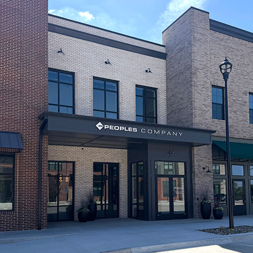
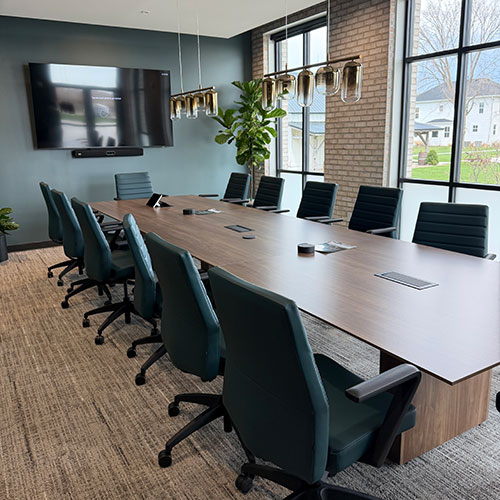
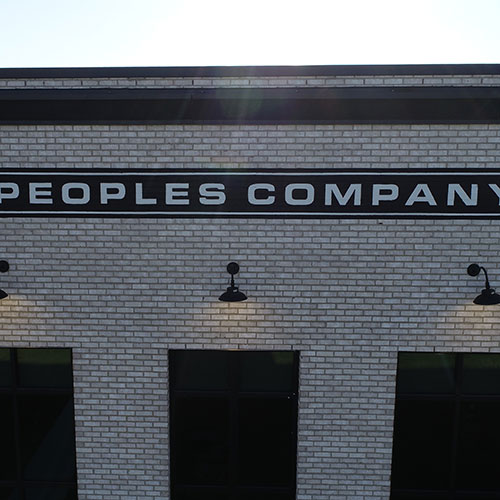

Contact
Corporate Office
1108 S. 44th Street, Suite 102
Cumming, IA 50061
855.800.5263
Info@PeoplesCompany.com
Follow Us



Peoples Company Offices
-
Arlington, TN — Delta region
Delta 11990 Mott Street
Arlington, TN 38002
901.483.0373 -
Bloomington, IL — Midwest region
Midwest 1907 Jumer Drive, Suite D
Bloomington, IL 61704
800.607.6888 -
Cascade, IA — Midwest region
Midwest 300 1st Avenue W
Cascade, IA 52033
563.543.8338 -
Champaign, IL — Midwest region
Midwest 1605 South State Street, Suite 110
Champaign, IL 61820
800.607.6888 -
Cumming, IA — Midwest region
Midwest 1108 S. 44th Street, Suite 102
Cumming, IA 50061
515.222.1347 -
DeWitt, IA — Midwest region
Midwest 700 6th Avenue
DeWitt, IA 52742
563.659.8185 -
Fremont, NE — Midwest region
Midwest 1735 E. Military Avenue, P.O. Box 672
Fremont, NE 68026
402.721.5995 -
Fresno, CA — Pacific West region
Pacific West 7675 N. Ingram Avenue, Suite 101
Fresno, CA 93711
559.944.9524 -
Independence, IA — Midwest region
Midwest 2300 Swan Lake Boulevard, Suite 300
Independence, IA 50644
319.361.8089 -
Indianola, IA — Midwest region
Midwest 113 W. Salem Avenue
Indianola, IA 50125
515.961.0247 -
Kasson, MN — Midwest region
Midwest 20 4th Street SE
Kasson, MN 55944
507.634.7033 -
Kearney, NE — Midwest region
Midwest 4111 4th Avenue, Suite 22
Kearney, NE 68845
308.237.7662 -
Lexington, KY
Appalachian 348 E. Main Street, Office #24
Lexington, KY 40507
855.800.LAND -
Lincoln, NE — Midwest region
Midwest 3501 Plantation Drive, Suite 100
Lincoln, NE 68516
402.434.4498 -
Marlette, MI — Lake States region
Lake States 3509 S. Van Dyke Road
Marlette, MI 48453
989.635.0086 -
Mineral Point, WI — Lake States region
Lake States 207 High Street
Mineral Point, WI 53565
608.482.1229 -
Monroe, LA — Delta region
Delta 1500 N. 19th Street
Monroe, LA 71201
515.222.1347 -
Norfolk, NE — Midwest region
Midwest 800 W. Benjamin Avenue, Suite B
Norfolk, NE 68701
402.371.0065 -
Omaha, NE — Midwest region
Midwest 4601 Catalyst Court, Suite 1070
Omaha, NE 68106
402.334.0256 -
Oswego, IL — Midwest region
Midwest 2681 U.S. Highway 34
Oswego, IL 60543
331.999.3490 -
Plainfield, IA — Midwest region
Midwest 714 Main Street
Plainfield, IA 50666
515.222.1347 -
San Diego, CA — Pacific West region
Pacific West 2150 W. Washington Street, Suite 501
San Diego, CA 92110
619.757.3435 -
Walla Walla, WA — Pacific Northwest region
Pacific Northwest 109 W. Poplar Street
Walla Walla, WA 99362
509.540.0228 -
Wapakoneta, OH — Midwest region
Midwest 22253 Blank Pike
Wapakoneta, OH 43895
402.334.0256 -
Wayne, NE — Midwest region
Midwest 206 Main Street, P.O. Box 16
Wayne, NE 68787
402.833.3132